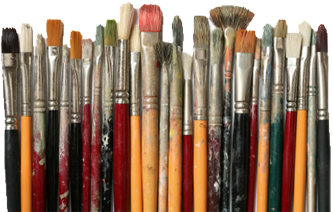
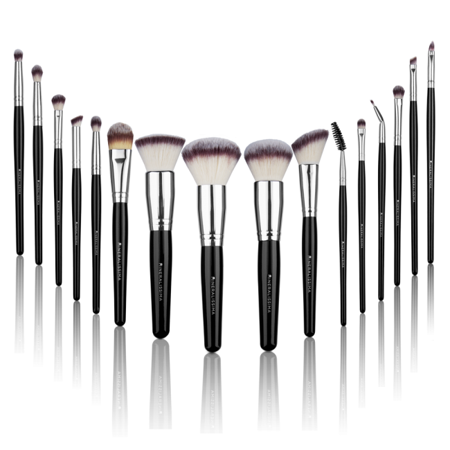
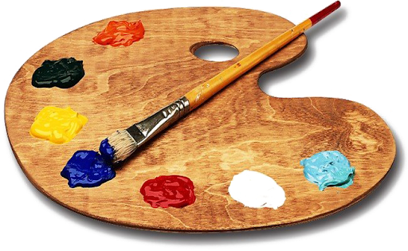
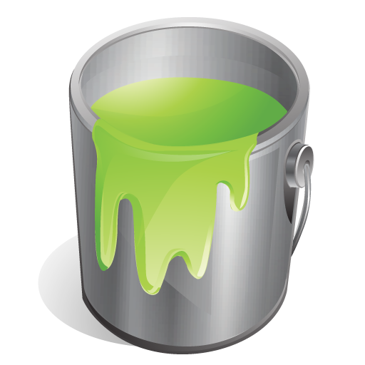
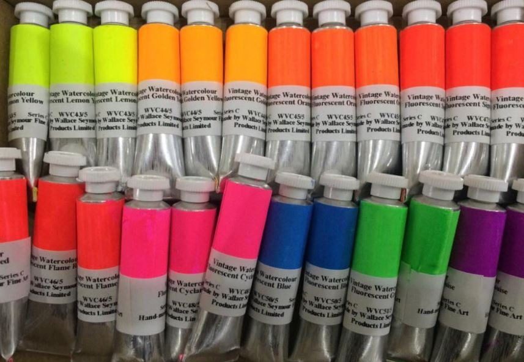
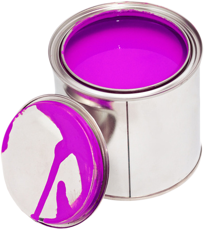
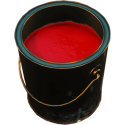
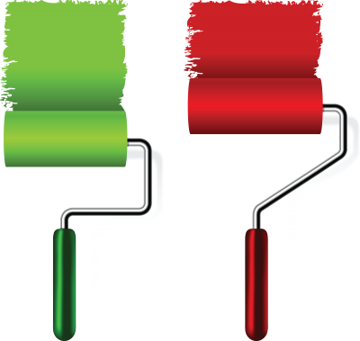
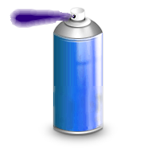
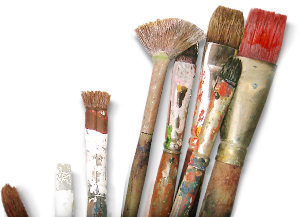

mooie kwastset 2 euro
ook een mooie set 5 euro 
bij elkaar 10 euroo
60 euro
kwaliteits spul 30 euro
K.Appel verf 30 euro
kwaliteits spul 40 euro
kwaliteits spul 60 euro
rolt uitstekent 4 euro
spuitbus blauw 10 euro
lady Gaga set 2 euro